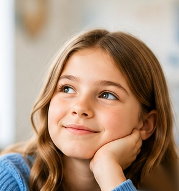
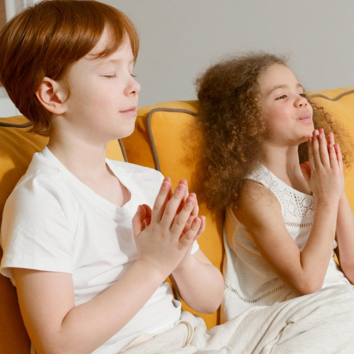
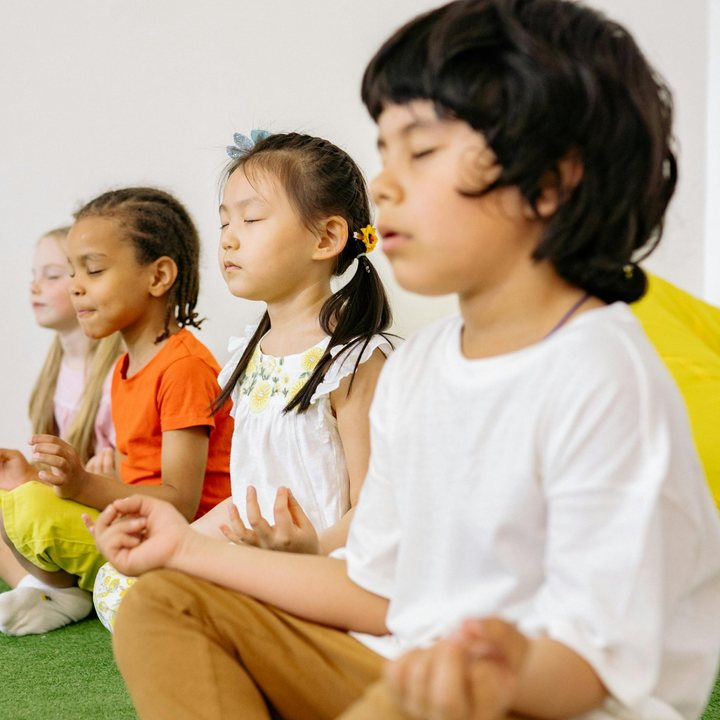
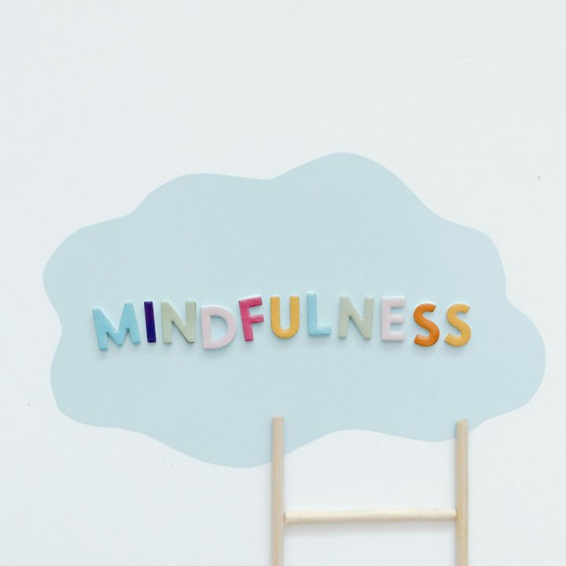

Mindfulness voor kinderen
Hoe zou het zijn als kinderen al op jonge leeftijd leren omgaan met hun gedachten en emoties? In een wereld vol prikkels, drukte en verwachtingen is dat geen overbodige luxe.
Tijdens de training leer ik kinderen minder stress te ervaren, beter om te gaan met emoties, hun aandacht te sturen en rust te vinden in hun hoofd en lichaam. Ik vul de mindfulnesslessen aan met kinderfilosofie en coaching.

Mindfulness voor jouw kind
Ik geef mindfulnesstrainingen aan kinderen op basisscholen, voor groep 4 tot en met 8. Daarnaast bied ik in mijn praktijk een achtweekse basiscursus aan voor kinderen van 8 tot en met 12 jaar, als individueel traject dat aansluit op wat het kind nodig heeft.
Wekelijkse mindfulnesslessen
Individuele sessies van 45 minuten in mijn praktijk in Amsterdam, voor kinderen van 8 tot en met 12 jaar. We starten met een achtweekse basiscursus. Daarna ga ik verder met sessies die passen bij de behoeften en interesses van je kind, aangevuld met kinderfilosofie en coaching.
Meer over de sessies Plan een kennismakingMindfulness op school
Een achtweekse training voor een kleine, vaste groep van maximaal 10 kinderen uit groep 4 tot en met 8, op school.
Meer over mindfulness op school Plan een kennismakingWat leren kinderen tijdens de training?
Steeds meer onderzoek toont aan dat mindfulness een positieve invloed heeft op het welzijn en de ontwikkeling van kinderen.
Concentratie
Kinderen leren herkennen wanneer ze afgeleid zijn en hoe ze hun aandacht terugbrengen naar het moment.
Rust en kalmte
Ze ontdekken hoe ze hun lichaam en hoofd tot rust kunnen brengen.
Omgaan met emoties
Kinderen leren gevoelens als angst, boosheid en verdriet herkennen, begrijpen en ermee omgaan zonder erin meegezogen te worden.
Aanwezig zijn in het nu
Kinderen leren er te zijn in het moment, ook als er iets spannends komt. Ze zijn minder met hun gedachten in het verleden of de toekomst.
Zelfvertrouwen
Door een open en niet-oordelende houding ontwikkelen kinderen meer vertrouwen in zichzelf en in anderen.
Geheugen en leren
Door met aandacht aanwezig te zijn, nemen kinderen informatie beter op en onthouden ze die beter.
Ik werk met de methode Aandacht werkt van Eline Snel. Dit is een wereldwijd toegepaste methode die speciaal is ontwikkeld voor kinderen. De aanpak is praktisch, speels en direct toepasbaar in het dagelijks leven. Zowel thuis als op school kunnen kinderen de oefeningen gebruiken.
Reviews
“Mijn zoon Alex (10) heeft altijd een vol hoofd en ik was nieuwsgierig of mindfulness daar wat aan kon doen. Het antwoord is ja! Sophie weet kinderen echt te bereiken. Alex vond het super en wilde thuis meteen de oefeningen laten zien. Op school focust hij ook beter, zegt zijn juf!”
Rene, vader van Alex
“Ik vond het super leuk!! Sophie las een verhaal en wij moesten heel stil zitten als een kikker. Ik luisterde naar alle geluiden om me heen en ik hoorde dingen die ik nog nooit had gehoord. Echt cool!”
Alex, 10 jaar
“Thanks to the mindfulness sessions he has learned about what being calm brings to him, to be able to search for his emotions, by breathing consciously it helps him to identify his own state of mind like it was the weather outside, but happening inside.”
Pedro, vader van Hugo“My daughter attended the mindfulness training and at first she found it a bit calm, but by the end she was asking if she could do it again! That really says a lot. I think the training helped her pause, reflect, and enjoy learning in a calm way. It was also very educational for me to see her participate and engage. We would definitely recommend this mindfulness course!”
Ami, moeder van Alaska“Je hebt een hele lieve juf, je leert heel veel dingen en het laat je ook tot rust komen. Je moet soms geduld hebben, maar dat ga je leren.”
Mira, 9 jaar
Benieuwd naar de voordelen? Ik denk graag mee.
Plan vrijblijvend een kennismakingsgesprekMindfulness sessies
Hoe zou het zijn als kinderen al op jonge leeftijd leren omgaan met hun gedachten en emoties? In een wereld vol prikkels, drukte en verwachtingen is dat geen overbodige luxe.
Tijdens de mindfulnesslessen leren kinderen minder stress te ervaren, beter om te gaan met emoties, hun aandacht te sturen en rust te vinden in hun hoofd en lichaam. Door dit al op jonge leeftijd te oefenen, ontwikkelen kinderen vaardigheden waar ze hun hele leven iets aan hebben.

Zo ziet het traject eruit
De basiscursus van acht weken
We starten met een basiscursus waarin de belangrijkste thema's van mindfulness voor kinderen aan bod komen.
- een intake vooraf
- 8 wekelijkse sessies van 45 minuten
- oefeningen om thuis mee verder te oefenen
- een eindevaluatie waarin we bespreken waar daarna de focus op mag liggen
Wekelijkse vervolgsessies
Na de basiscursus kun je de mindfulnesslessen voortzetten met wekelijkse sessies. We bouwen verder op de basistraining en zoomen in op specifieke onderdelen, afhankelijk van de hulpvraag en de interesses van je kind.
Naar behoefte vul ik deze sessies aan met kinderfilosofie en coaching.
Wat leren kinderen tijdens de mindfulnesslessen?
Steeds meer onderzoek toont aan dat mindfulness een positieve invloed heeft op het welzijn en de ontwikkeling van kinderen. De basiscursus bestaat uit verschillende ademhalings-, meditatie- en bewegingsoefeningen en richt zich op deze vaardigheden:
Concentratie
Kinderen leren herkennen wanneer ze afgeleid zijn en hoe ze hun aandacht terugbrengen naar het moment.
Rust en kalmte
Ze ontdekken hoe ze hun lichaam en hoofd tot rust kunnen brengen.
Omgaan met emoties
Kinderen leren gevoelens als angst, boosheid en verdriet herkennen, begrijpen en ermee omgaan zonder erin meegezogen te worden.
Aanwezig zijn in het nu
Kinderen leren er te zijn in het moment, ook als er iets spannends komt. Ze zijn minder met hun gedachten in het verleden of de toekomst.
Zelfvertrouwen en mildheid
Door een open en niet-oordelende houding ontwikkelen kinderen meer vertrouwen in zichzelf en in anderen.
Geheugen en leren
Door met aandacht aanwezig te zijn, kunnen kinderen beter informatie opnemen en onthouden.
Tijdens de sessies gebruiken we
- ademhalingsoefeningen
- korte meditaties
- spel en beweging
- aandachtsoefeningen
Voor wie zijn de mindfulnesslessen?
Voor kinderen van acht tot en met twaalf jaar die:
- moeite hebben met concentratie
- snel overprikkeld zijn
- veel piekeren
- spanning of onzekerheid ervaren
Maar ook voor kinderen die simpelweg willen leren hoe ze meer rust en aandacht kunnen ervaren.
Kennismaken?
Plan vrijblijvend een kennismakingsgesprek en vertel wat je kind nodig heeft.
Naar contactMindfulness op school
Hoe fijn zou het zijn als kinderen al op jonge leeftijd leren omgaan met hun gedachten en emoties? Naast rekenen en taal zijn dit vaardigheden waar ze hun hele leven iets aan hebben. Met mindfulness help je kinderen om meer rust, focus en zelfvertrouwen te ontwikkelen, gewoon in de klas.

Hoe ziet de training eruit?
Kinderen leren op een speelse manier stil te staan bij wat ze denken, voelen en ervaren. Alles op een manier die past bij de leeftijd en belevingswereld van kinderen.
Tijdens de lessen werken we met ademhalingsoefeningen, korte meditaties, bewegingsoefeningen, spelletjes en aandachtsoefeningen. Ik kom de training wekelijks geven. Daarnaast krijgen leerkrachten korte oefeningen die ze zelf kunnen doen met de klas, als ze dat willen.
Voor wie?
Voor leerlingen uit groep 4 tot en met groep 8 die spanning of onzekerheid ervaren, snel afgeleid zijn of last hebben van overprikkeling. Maar ook voor kinderen die simpelweg willen leren hoe ze meer rust en aandacht kunnen ervaren.
Kinderen oefenen met
- omgaan met hun gedachten
- gevoelens herkennen en toelaten
- bewust ademhalen
- voelen wat er in hun lichaam en hoofd speelt
- hun aandacht sturen
- omgaan met spanning en emoties
Dit kan bijdragen aan
- meer rust in de klas
- beter omgaan met emoties
- meer concentratie en minder impulsief gedrag
- meer zelfvertrouwen
- prettigere samenwerking met anderen
- het beter onthouden van de leerstof
Praktische informatie
Voor wie?
Groep 4 t/m 8
Duur
8 wekelijkse sessies van 30 minuten
Extra
Oefeningen voor in de klas en de mogelijkheid tot opfrissessies.
Kosten
Ik kom graag langs voor een kennismakingsgesprek en maak een offerte op maat.
Interesse voor jouw school?
Plan vrijblijvend een kennismakingsgesprek om te bespreken wat past bij jouw school.
Naar contactSophie van der Leek
Na mijn studie filosofie en opleiding tot kinderfilosoof ben ik jarenlang directeur geweest van een bijlesschool. Daar zag ik steeds weer hoe waardevol het zou zijn als kinderen leren omgaan met hun gedachten en gevoelens.
Als gecertificeerd mindfulness kindertrainer geef ik mindfulnesstrainingen aan kinderen, zowel op basisscholen als in mijn praktijk in Amsterdam.
Waarom mindfulness?
Mindfulness helpt kinderen om te ontspannen en rust te vinden in een hoofd dat soms vol kan zitten. Het geeft ze handvatten om om te gaan met alles wat ze voelen en meemaken. Voor mij voelt dit als iets wat ieder kind zou mogen leren: vaardigheden die niet alleen nu helpen, maar ook een basis vormen voor de rest van hun leven.
Methode
Ik werk met de methode Aandacht werkt van Eline Snel, een bewezen en praktisch toepasbare methode speciaal voor kinderen. Deze methode wordt wereldwijd gebruikt en is direct toepasbaar, zowel thuis als op school.
Daarnaast ben ik gecertificeerd kinderfilosoof en heb ik coachingsvaardigheden. Die kennis zet ik in om de mindfulnesslessen aan te vullen. Zo oefenen kinderen niet alleen met aandacht, maar leren ze ook stilstaan bij wat ze denken en voelen, en daar woorden voor te vinden.
Contact
Benieuwd naar de voordelen? Ik denk graag mee. Plan vrijblijvend een kennismakingsgesprek, voor een traject in mijn praktijk in Amsterdam Oost of voor mindfulness op jouw school.

Stuur een bericht
Praktijk
Mijn praktijk is in Amsterdam Oost. In overleg zijn sessies aan huis mogelijk.